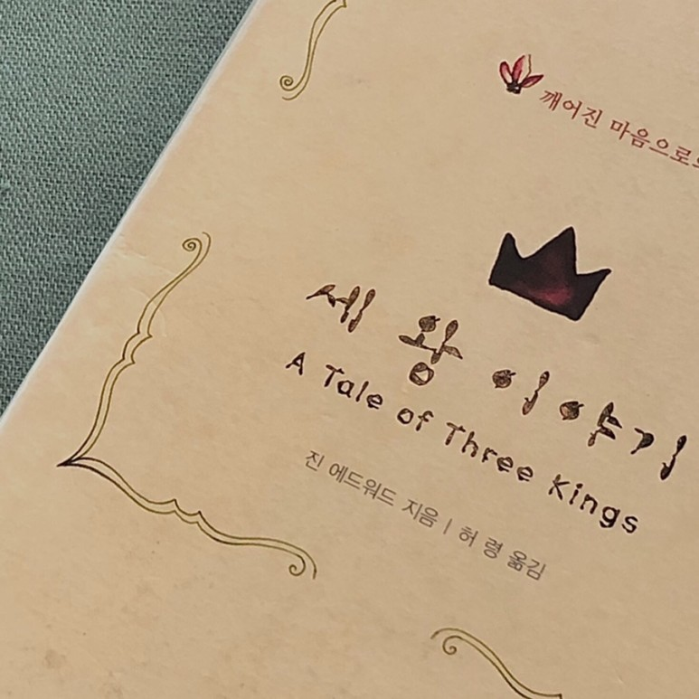

<!doctype html>
<html>
    <head>
        <meta charset="UTF-8">
        <meta name = "viewport" content = "width = device-width, initial-scale=1.0">
        <title>세 왕 이야기 - 진 에드워드</title>
        <link rel="stylesheet" type="text/css" href="../../css/pages.css">
    </head>
</html>

<body>
    <header>
        <h3><a href = "../../index.html">HAGUS <br> HARDWARE</a></h3> 
        <ul id="main_menu">
        </ul>

        <script src = "../../MainMenu.js"></script>
    </header>

    <section class="section">
    <div id = "tag_menu">
    </div>

    <script src = "../../tag_menu.js"></script>

    <div id = "tag_list">
        <div class="l_title"><a href = "../../tag.html">Booklist</a></div><hr>
        <div class = "l_subtitle"><div class = "title"><a href = "../../tag.html"><strong>세 왕 이야기 - 진 에드워드</div><div id="date">2020.11.20</div></strong></a></div>
             <!--content-->
        <div class = "content">
<pre>

...
하나님이 다윗의 심장 안에 있는 사울을 제거하지 않으셨다면, 양치기 다윗은 사울 왕 2세로 성장했을 것이다. 내가 억울하다고 느끼고 불편하게 느껴지는 것들이 내 안에 자리잡고 있을 가능성이 크다는 것을 항상 염두해 두고 그것들을 하나님 앞에 가지고 나아가 다룸 받아야 한다. 그 수술은 실상 여러 해가 걸린 것이었고 환자를 거의 죽게 할만큼 무자비한 험이었다. 하나님이 사용하신 메스와 집게는 바로 겉사람 사울을 쓰신 것이다. 다윗은 이런 운명을 받아들였다. 잔인한 상황들을 포용하였다. 그는 응수하지 않았다. 대항 하지도 않았다. 자신의 경건함을 보이기 위해 박수갈채를 노리는 연기도 하지 않았다. 그는 그 가혹한 시련을 겪었다.

모세는 하나님의 기름 부으신 자의 뛰어난 표본이었다. 하나님 나라에는 형식도 계급도 없다. 오직 상한 심령을 가진 사람이 있을 뿐이다. 모세는 바로 그런 사람이었다. 고라는 모세의 사촌이었지만, 모세가 가진 권위를 갖기 원했다. 어느 왕국이든 문제는 있게 마련이다. 40세의 모세는 교만하고 제멋대로 하는 사람, 고라와 그다지 다를 바가 없는 사람이었다. 하지만 80세의 그는 깨어진 사람이었다. “그는 온유함이 땅 위에 모든 사람보다 승한 자!”라고 저자는 표현한다. 모세는 아무것도 하지 않았다. 모세는 하나님 앞에 엎드렸다. 그것이 그가 한 전부였다. 인간들은 왕이 되기 위해 싸운다. 아무것도 하지 않고 그분만 잠잠히 바라는 것, 내가 훈련되어져야 할 부분이다.

</pre>

        <br>
        <br>
        <br>
        </div>


    </div>

</section>

    
</body>


